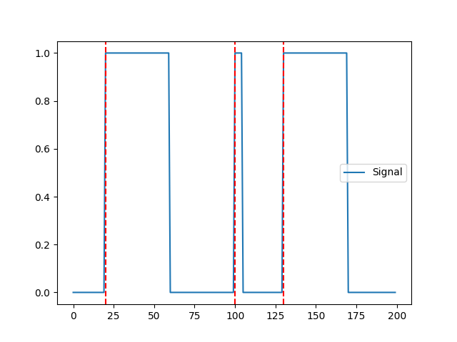
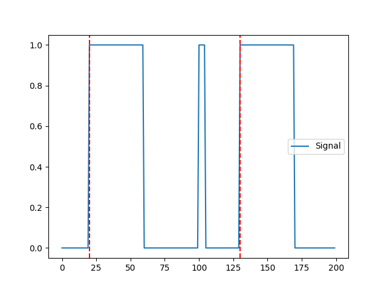
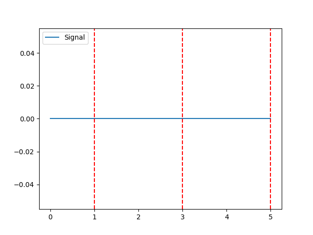
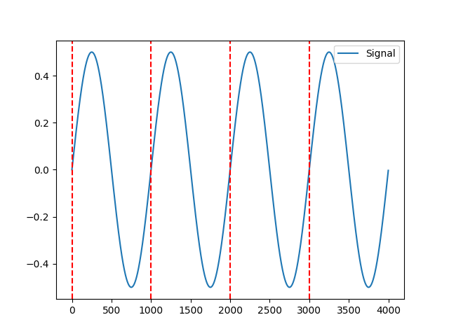
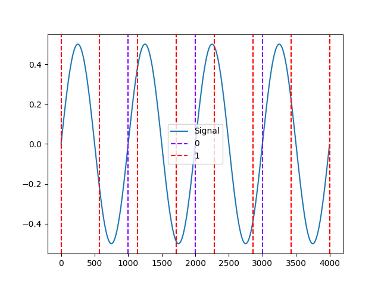
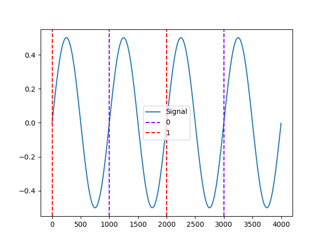
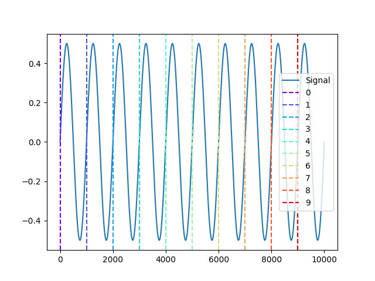

Events#
Main#
events_create()#
- events_create(event_onsets, event_durations=None, event_labels=None, event_conditions=None)[source]#
Create events dictionnary from list of onsets
- Parameters:
event_onsets (array or list) – A list of events onset.
event_durations (array or list) – A list of durations. If none is passed, will take the duration between each onset (i.e., will assume that events are consecutive).
event_labels (list) – A list containing unique event identifiers. If
None, will use the event index number.event_conditions (list) – An optional list containing, for each event, for example the trial category, group or experimental conditions.
- Returns:
dict – Dict containing 3 or 4 arrays,
"onset"for event onsets,"duration"for event durations,"label"for the event identifiers and the optional"conditions"passed toevent_conditions.
See also
Example
In [1]: import neurokit2 as nk In [2]: events = nk.events_create(event_onsets = [500, 1500, 2500, 5000]) In [3]: events Out[3]: {'onset': [500, 1500, 2500, 5000], 'duration': array([ 500, 1000, 1000, 2500]), 'label': array(['1', '2', '3', '4'], dtype='<U11')} In [4]: events = nk.events_create(event_onsets = [500, 1500, 2500, 5000], ...: event_labels=["S1", "S2", "S3", "S4"], ...: event_conditions=["A", "A", "B", "B"]) ...: In [5]: events Out[5]: {'onset': [500, 1500, 2500, 5000], 'duration': array([ 500, 1000, 1000, 2500]), 'label': ['S1', 'S2', 'S3', 'S4'], 'condition': ['A', 'A', 'B', 'B']}
events_find()#
- events_find(event_channel, threshold='auto', threshold_keep='above', start_at=0, end_at=None, duration_min=1, duration_max=None, inter_min=0, discard_first=0, discard_last=0, event_labels=None, event_conditions=None)[source]#
Find Events
Find and select events in a continuous signal (e.g., from a photosensor).
- Parameters:
event_channel (array or list) – The channel containing the events.
threshold (str or float) – The threshold value by which to select the events. If
"auto", takes the value between the max and the min.threshold_keep (str) –
"above"or"below", define the events as above or under the threshold. For photosensors, a white screen corresponds usually to higher values. Therefore, if your events are signaled by a black colour, events values are the lower ones (i.e., the signal “drops” when the events onset), and you should set the cut to"below".start_at (int) – Keep events which onset is after a particular time point.
end_at (int) – Keep events which onset is before a particular time point.
duration_min (int) – The minimum duration of an event to be considered as such (in time points).
duration_max (int) – The maximum duration of an event to be considered as such (in time points).
inter_min (int) – The minimum duration after an event for the subsequent event to be considered as such (in time points). Useful when spurious consecutive events are created due to very high sampling rate.
discard_first (int) – Discard first or last n events. Useful if the experiment starts with some spurious events. If
discard_first=0, no first event is removed.discard_last (int) – Discard first or last n events. Useful if the experiment ends with some spurious events. If
discard_last=0, no last event is removed.event_labels (list) – A list containing unique event identifiers. If
None, will use the event index number.event_conditions (list) – An optional list containing, for each event, for example the trial category, group or experimental conditions.
- Returns:
dict – Dict containing 3 or 4 arrays,
"onset"for event onsets,"duration"for event durations,"label"for the event identifiers and the optional"conditions"passed toevent_conditions.
See also
Example
Simulate a trigger signal (e.g., from photosensor)
In [1]: import neurokit2 as nk In [2]: import numpy as np In [3]: signal = np.zeros(200) In [4]: signal[20:60] = 1 In [5]: signal[100:105] = 1 In [6]: signal[130:170] = 1 In [7]: events = nk.events_find(signal) In [8]: events Out[8]: {'onset': array([ 20, 100, 130]), 'duration': array([40, 5, 40]), 'label': array(['1', '2', '3'], dtype='<U11')} In [9]: nk.events_plot(events, signal)
The second event is an artifact (too short), we can skip it
In [10]: events = nk.events_find(signal, duration_min= 10) In [11]: nk.events_plot(events, signal)
{kind=link}
{kind=link}
events_plot()#
- events_plot(events, signal=None, color='red', linestyle='--')[source]#
Visualize Events
Plot events in signal.
- Parameters:
events (list or ndarray or dict) – Events onset location. Can also be a list of lists, in which case it will mark them with different colors. If a dict is passed (e.g., from
events_find()), it will only plot the onsets.signal (array or DataFrame) – Signal array (can be a dataframe with many signals).
color (str) – Argument passed to matplotlib plotting.
linestyle (str) – Argument passed to matplotlib plotting.
- Returns:
fig – Figure representing a plot of the signal and the event markers.
See also
Examples
In [1]: import neurokit2 as nk In [2]: nk.events_plot([1, 3, 5])
Example 1: With signal
In [3]: signal = nk.signal_simulate(duration=4) In [4]: events = nk.events_find(signal) In [5]: nk.events_plot(events, signal)
Example 2: Different events
In [6]: events1 = events["onset"] In [7]: events2 = np.linspace(0, len(signal), 8) In [8]: nk.events_plot([events1, events2], signal)
Example 3: Conditions
In [9]: events = nk.events_find(signal, event_conditions=["A", "B", "A", "B"]) In [10]: nk.events_plot(events, signal)
Example 4: Different colors for all events
In [11]: signal = nk.signal_simulate(duration=10) In [12]: events = nk.events_find(signal) In [13]: events = [[i] for i in events['onset']] In [14]: nk.events_plot(events, signal)
{kind=link}
{kind=link}
{kind=link}
{kind=link}
{kind=link}
events_to_mne()#
- events_to_mne(events, event_conditions=None)[source]#
Create MNE-compatible events
Create MNE compatible events for integration with M/EEG.
- Parameters:
events (list or ndarray or dict) – Events onset location. Can also be a dict obtained through
events_find().event_conditions (list) – An optional list containing, for each event, for example the trial category, group or experimental conditions. Defaults to
None.
- Returns:
tuple – MNE-formatted events and the event id, that can be added via
raw.add_events(events), and a dictionary with event’s names.
See also
Examples
In [1]: import neurokit2 as nk In [2]: signal = nk.signal_simulate(duration=4) In [3]: events = nk.events_find(signal) In [4]: events, event_id = nk.events_to_mne(events) In [5]: events Out[5]: array([[ 1, 0, 0], [1001, 0, 0], [2001, 0, 0], [3001, 0, 0]]) In [6]: event_id Out[6]: {'event': 0} # Conditions In [7]: events = nk.events_find(signal, event_conditions=["A", "B", "A", "B"]) In [8]: events, event_id = nk.events_to_mne(events) In [9]: event_id Out[9]: {'A': 0, 'B': 1}